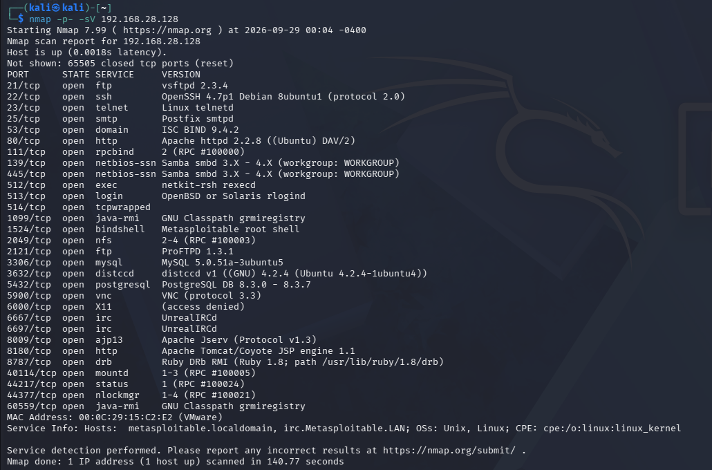
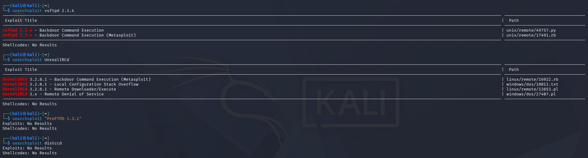
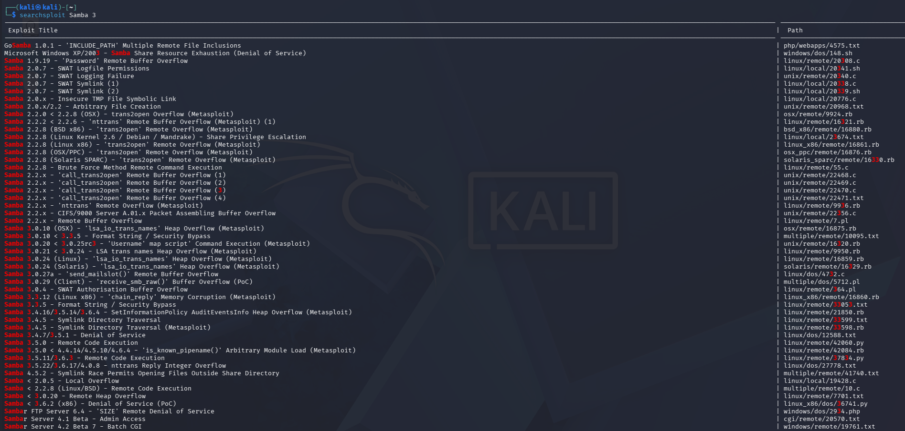
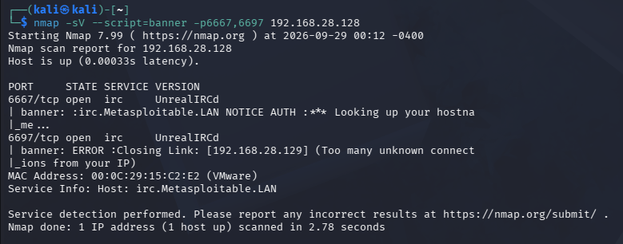
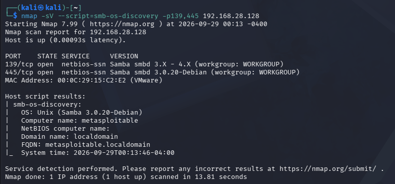

This report is my submission for Assignment 05 of the Ethical Hacking & Cybersecurity Practical (Batch-11) programme. It documents setting up the intentionally vulnerable Metasploitable-2 virtual machine, running a full TCP port and service-version scan with Nmap, explaining every open port and its protocol, and then mapping the vulnerable service versions to publicly available exploits using Exploit-DB and searchsploit.
| Task | Requirement | Section | Status |
|---|---|---|---|
| 01 | Set up Metasploitable-2 and scan all ports with service version | Section 2 | Completed |
| 02 | Explain ports and protocols from the Nmap scan | Section 3 | Completed |
| 03 | Find public exploits for vulnerable versions (Exploit-DB, searchsploit) | Section 4 | Completed |
| Item | Value |
|---|---|
| Attacker machine | Kali Linux (VMware) |
| Target machine | Metasploitable-2 (Ubuntu 8.04-based), MAC 00:0C:29:15:C2:E2 (VMware) |
| Target IP | 192.168.28.128 |
| Network mode | Host-only / NAT (isolated lab, no Internet exposure) |
| Scanner | Nmap 7.99 |
| Scan date | 28 September 2026, 15:08 (-0400) |
msfadmin / msfadmin.192.168.28.128.I scanned all 65,535 TCP ports with service/version detection. The -p- flag scans every port and -sV probes each open port for its running service and version.
┌──(kali㉿kali)-[~]
└─$ nmap -p- -sV 192.168.28.128
Starting Nmap 7.99 ( https://nmap.org ) at 2026-09-28 15:08 -0400 Nmap scan report for 192.168.28.128 Host is up (0.0017s latency). Not shown: 65505 closed tcp ports (reset) PORT STATE SERVICE VERSION 21/tcp open ftp vsftpd 2.3.4 22/tcp open ssh OpenSSH 4.7p1 Debian 8ubuntu1 (protocol 2.0) 23/tcp open telnet Linux telnetd 25/tcp open smtp Postfix smtpd 53/tcp open domain ISC BIND 9.4.2 80/tcp open http Apache httpd 2.2.8 ((Ubuntu) DAV/2) 111/tcp open rpcbind 2 (RPC #100000) 139/tcp open netbios-ssn Samba smbd 3.X - 4.X (workgroup: WORKGROUP) 445/tcp open netbios-ssn Samba smbd 3.X - 4.X (workgroup: WORKGROUP) 512/tcp open exec netkit-rsh rexecd 513/tcp open login OpenBSD or Solaris rlogind 514/tcp open tcpwrapped 1099/tcp open java-rmi GNU Classpath grmiregistry 1524/tcp open bindshell Metasploitable root shell 2049/tcp open nfs 2-4 (RPC #100003) 2121/tcp open ftp ProFTPD 1.3.1 3306/tcp open mysql MySQL 5.0.51a-3ubuntu5 3632/tcp open distccd distccd v1 ((GNU) 4.2.4 (Ubuntu 4.2.4-1ubuntu4)) 5432/tcp open postgresql PostgreSQL DB 8.3.0 - 8.3.7 5900/tcp open vnc VNC (protocol 3.3) 6000/tcp open X11 (access denied) 6667/tcp open irc UnrealIRCd 6697/tcp open irc UnrealIRCd 8009/tcp open ajp13 Apache Jserv (Protocol v1.3) 8180/tcp open http Apache Tomcat/Coyote JSP engine 1.1 8787/tcp open drb Ruby DRb RMI (Ruby 1.8; path /usr/lib/ruby/1.8/drb) 40114/tcp open mountd 1-3 (RPC #100005) 44217/tcp open status 1 (RPC #100024) 44377/tcp open nlockmgr 1-4 (RPC #100021) 60559/tcp open java-rmi GNU Classpath grmiregistry MAC Address: 00:0C:29:15:C2:E2 (VMware) Service Info: Hosts: metasploitable.localdomain, irc.Metasploitable.LAN; OSs: Unix, Linux; CPE: cpe:/o:linux:linux_kernel Service detection performed. Please report any incorrect results at https://nmap.org/submit/ . Nmap done: 1 IP address (1 host up) scanned in 140.18 seconds

nmap -p- -sV 192.168.28.128) run from Kali, showing all 30 open ports and their detected service versions.30 open TCP ports were found. The scan completed in 140.18 seconds. The next section explains each port and protocol.
Below every open port from the scan is explained: the service, whether it uses TCP as a transport, what the protocol does, and why it matters to an attacker. All ports here are TCP (Nmap scanned TCP with -p-).
| Port | Service | Protocol & purpose |
|---|---|---|
21 | FTP (vsftpd 2.3.4) | File Transfer Protocol — uploads/downloads files. Credentials and data travel in cleartext. This exact version ships a backdoor. |
22 | SSH (OpenSSH 4.7p1) | Secure Shell — encrypted remote login and command execution. Old version with known weaknesses. |
23 | Telnet | Legacy remote login. Fully cleartext — usernames, passwords and commands are visible to anyone sniffing the network. |
25 | SMTP (Postfix) | Simple Mail Transfer Protocol — sends email. Can be abused for user enumeration (VRFY/EXPN) and relay testing. |
53 | DNS (ISC BIND 9.4.2) | Domain Name System — resolves names to IPs. Old BIND versions have DoS and cache-related CVEs; zone transfers may leak records. |
80 | HTTP (Apache 2.2.8, DAV/2) | Web server hosting the vulnerable web apps (DVWA, Mutillidae, etc.). WebDAV (DAV/2) can allow file upload. Old Apache with many CVEs. |
111 | rpcbind | ONC RPC portmapper — maps RPC programs to dynamic ports. Lets an attacker enumerate NFS, mountd and other RPC services. |
139 / 445 | Samba (SMB 3.x) | Windows-style file/printer sharing on Linux. Enables share enumeration; this version is vulnerable to command injection. |
| Port | Service | Protocol & purpose |
|---|---|---|
512 | exec (rexecd) | Berkeley r-service for remote command execution with cleartext credentials. Insecure by design. |
513 | login (rlogind) | Remote login r-service. Trusts .rhosts/host-based auth, easily abused. |
514 | shell (rsh, tcpwrapped) | Remote shell r-service. With trust misconfiguration an attacker gets a shell with no password. |
1524 | bindshell | An intentional root backdoor — connecting with nc 192.168.28.128 1524 drops straight into a root shell. |
| Port | Service | Protocol & purpose |
|---|---|---|
1099 | Java RMI (grmiregistry) | Java Remote Method Invocation registry. Default insecure config allows loading a remote class → code execution. |
2049 | NFS | Network File System — shares directories over the network. Weak exports (e.g. no_root_squash) let an attacker read/write files or plant an SSH key. |
2121 | FTP (ProFTPD 1.3.1) | A second FTP daemon. This version has known vulnerabilities and possible cleartext exposure. |
3306 | MySQL 5.0.51a | Database service. Often has a blank/weak root password on Metasploitable, allowing direct DB access. |
3632 | distccd | Distributed C/C++ compiler daemon. Accepts compile jobs — a classic remote command-execution vector. |
5432 | PostgreSQL 8.3 | Database service. Default postgres/postgres credentials can lead to file read and code execution. |
5900 | VNC (protocol 3.3) | Remote desktop. Weak/default password (password) gives full graphical control. |
6000 | X11 | X Window server. If access is open, an attacker can capture keystrokes and screenshots (here it showed access denied). |
6667 / 6697 | IRC (UnrealIRCd) | Chat server. This build of UnrealIRCd contains a backdoor in the source tarball. |
8009 | AJP13 (Apache JServ) | Tomcat AJP connector. Can be abused to read files / include content (Ghostcat-style attacks). |
8180 | Apache Tomcat/Coyote 1.1 | Java web server with a Manager app. Default tomcat/tomcat creds let you deploy a malicious WAR for code execution. |
8787 | Ruby DRb | Distributed Ruby remote object service — allows remote code execution by design when exposed. |
40114 | mountd (RPC) | NFS mount daemon on a dynamic RPC port — used with NFS to mount exported shares. |
44217 | status (RPC) | NSM/rpc.statd status monitor for NFS lock recovery. |
44377 | nlockmgr (RPC) | NFS lock manager on a dynamic RPC port. |
60559 | Java RMI (grmiregistry) | A second RMI registry endpoint on a high port, same RMI code-execution risk as 1099. |
-p- which is TCP only, so every port above is TCP. A UDP scan (nmap -sU) would additionally reveal services such as DNS (53/udp) and NFS-related daemons that also listen on UDP.
Using searchsploit (the offline Exploit-DB CLI on Kali) and the Exploit-DB website, I mapped the vulnerable service versions to publicly available exploits. The workflow for each service was:
┌──(kali㉿kali)-[~]
└─$ searchsploit vsftpd 2.3.4
└─$ searchsploit unrealircd
└─$ searchsploit samba 3.0
└─$ searchsploit distcc
└─$ searchsploit tomcat manager
└─$ searchsploit proftpd 1.3
| Port | Service / Version | Public exploit & reference | Severity |
|---|---|---|---|
21 | vsftpd 2.3.4 | vsftpd 2.3.4 smiley-face backdoor — CVE-2011-2523. searchsploit: unix/remote/17491.rb (Metasploit) and unix/remote/49757.py; Metasploit module exploit/unix/ftp/vsftpd_234_backdoor. A username ending in :) opens a root shell on port 6200. |
Critical |
139/445 | Samba 3.0.20 (smbd 3.x) | Samba "username map script" command execution — CVE-2007-2447. searchsploit: unix/remote/16320.rb ("Samba 3.0.20 < 3.0.25rc3 - Username map script"); Metasploit exploit/multi/samba/usermap_script. Unauthenticated root RCE. |
Critical |
6667/6697 | UnrealIRCd 3.2.8.1 | UnrealIRCd 3.2.8.1 backdoor — CVE-2010-2075. searchsploit: linux/remote/16922.rb and linux/remote/13853.pl; Metasploit exploit/unix/irc/unreal_ircd_3281_backdoor. Trojaned tarball yields RCE. |
Critical |
3632 | distccd v1 (GCC 4.2.4) | distcc daemon command execution — CVE-2004-2687. Note: searchsploit distccd gives No Results; use Metasploit exploit/unix/misc/distcc_exec (no standalone EDB script). Remote command execution as the daemon user. |
Critical |
1099/60559 | Java RMI (grmiregistry) | Java RMI Server insecure default configuration — Metasploit exploit/multi/misc/java_rmi_server (based on CVE-2011-3556 class-loading behaviour). Remote code execution. |
High |
8180 | Apache Tomcat/Coyote 1.1 | Tomcat Manager default/weak credentials (tomcat/tomcat) → WAR deploy. Metasploit exploit/multi/http/tomcat_mgr_deploy / tomcat_mgr_upload; many Exploit-DB entries under "Apache Tomcat manager". |
Critical |
8787 | Ruby DRb (Ruby 1.8) | Distributed Ruby (dRuby) remote code execution — Metasploit exploit/linux/misc/drb_remote_codeexec. Executes arbitrary Ruby/OS commands. |
Critical |
1524 | Metasploitable root bindshell | Intentional backdoor — no exploit needed: nc 192.168.28.128 1524 gives an immediate root shell. |
Critical |
2049 | NFS (with mountd/nlockmgr) | World-readable/writable exports (showmount -e) with no_root_squash — mount the share and plant an SSH key or read /etc/shadow. Manual technique, no single EDB ID. |
High |
512/513/514 | r-services (rexec/rlogin/rsh) | Trust-based / cleartext auth. With rlogin -l root 192.168.28.128 or a permissive .rhosts, remote access without a password. Metasploit auxiliary/scanner/rservices/*. |
High |
5900 | VNC (protocol 3.3) | Weak default password (password). Metasploit auxiliary/scanner/vnc/vnc_login then a VNC client for full desktop control. |
High |
3306 | MySQL 5.0.51a | Blank/weak root password. Metasploit auxiliary/scanner/mysql/mysql_login; direct login mysql -h 192.168.28.128 -u root. |
Medium |
5432 | PostgreSQL 8.3 | Default postgres/postgres. Metasploit auxiliary/scanner/postgres/postgres_login and postgres_payload for code execution. |
Medium |
2121 | ProFTPD 1.3.1 | searchsploit "ProFTPD 1.3.1" returned No Results offline. Check Exploit-DB online for ProFTPD 1.3.x (e.g. mod_copy in 1.3.5) and CVEs for manual testing. |
Medium |
80 | Apache 2.2.8 + web apps | Hosts DVWA, Mutillidae, phpMyAdmin, etc. Web-app exploitation (SQLi, command injection, file upload via WebDAV). searchsploit apache 2.2 for server-level CVEs. |
High |
23 | Telnet (Linux telnetd) | Cleartext credentials — capture with a sniffer, or brute-force with auxiliary/scanner/telnet/telnet_login. No encryption. |
Medium |
25 | Postfix SMTP | User enumeration via VRFY/EXPN — Metasploit auxiliary/scanner/smtp/smtp_enum. |
Medium |
22 | OpenSSH 4.7p1 | Outdated; primarily credential brute-force (auxiliary/scanner/ssh/ssh_login) and username enumeration. searchsploit openssh for version-specific notes. |
Medium |
53 | ISC BIND 9.4.2 | Old BIND with DoS CVEs; attempt zone transfer dig axfr @192.168.28.128. searchsploit bind 9.4 for references. |
Medium |

searchsploit lookups for the key services: vsftpd 2.3.4 and UnrealIRCd returned public exploits, while ProFTPD 1.3.1 and distccd returned no local results.
searchsploit Samba 3 — among the many entries, the “Samba 3.0.20 < 3.0.25rc3 - 'Username' map script' Command Execution (Metasploit)” entry (unix/remote/16320.rb, CVE-2007-2447) matches this target.┌──(kali㉿kali)-[~] └─$ searchsploit vsftpd 2.3.4 ------------------------------------------- --------------------------------- Exploit Title | Path ------------------------------------------- --------------------------------- vsftpd 2.3.4 - Backdoor Command Execution | unix/remote/17491.rb vsftpd 2.3.4 - Backdoor Command Execution | unix/remote/49757.py ------------------------------------------- --------------------------------- Shellcodes: No Results ┌──(kali㉿kali)-[~] └─$ searchsploit -m unix/remote/49757.py # copy exploit into current folder
searchsploit database. That does not mean they are safe — their exploits live in Metasploit modules or on the Exploit-DB website. Always cross-check exploit-db.com and msfconsole.
Before mapping exploits it is important to confirm the exact service versions, because an exploit that works on one version may fail on another. Two targeted NSE (Nmap Scripting Engine) scans confirmed the two most exploitable services.
┌──(kali㉿kali)-[~]
└─$ nmap -sV --script=banner -p6667,6697 192.168.28.128

irc.Metasploitable.LAN), the service carrying the 3.2.8.1 backdoor (CVE-2010-2075).┌──(kali㉿kali)-[~]
└─$ nmap -sV --script=smb-os-discovery -p139,445 192.168.28.128

smb-os-discovery reports the exact build Samba 3.0.20-Debian on metasploitable.localdomain. This precisely matches the vulnerable range for the “username map script” command-execution exploit (CVE-2007-2447), confirming the mapping in section 4.1.Samba 3.0.20-Debian, UnrealIRCd 3.2.8.1) turns a probable finding into a confirmed one, so the exploit chosen from Exploit-DB / Metasploit is the correct one for this target rather than a guess.
Ranked by ease of exploitation and impact, these are the fastest paths to root on this target:
| # | Vector | Why it is top priority |
|---|---|---|
| 1 | vsftpd 2.3.4 backdoor (21) | Single command → root shell. CVE-2011-2523. |
| 2 | UnrealIRCd backdoor (6667) | Trojaned tarball → RCE. CVE-2010-2075. |
| 3 | Samba usermap_script (139/445) | Unauthenticated root RCE. CVE-2007-2447. |
| 4 | distccd (3632) | Remote command execution. CVE-2004-2687. |
| 5 | Tomcat Manager (8180) | Default creds → WAR deploy → shell. |
| 6 | 1524 bindshell | Direct root shell, no exploit required. |
-p- scan is essential: high dynamic ports (40114, 44217, 44377, 60559) would be missed by a default top-1000 scan.-sV) is what makes exploit mapping possible — the version string is the bridge to Exploit-DB.searchsploit lets you confirm and copy a working exploit entirely offline before touching the target.Assignment 05 walked through the first phases of a penetration test against Metasploitable-2: setup, full-port enumeration with Nmap, protocol-level understanding of every open service, and mapping vulnerable versions to public exploits via Exploit-DB and searchsploit. The exercise shows how quickly an unpatched host with default configurations can be fully compromised, and why version hygiene, disabling legacy services (Telnet, r-services), and strong credentials matter.
I, Md. Abdur Razzaque, declare that this Assignment 05 submission is my own coursework. All scanning and exploit research was performed against my own isolated Metasploitable-2 lab VM. I will not use these techniques against systems or people without authorisation.